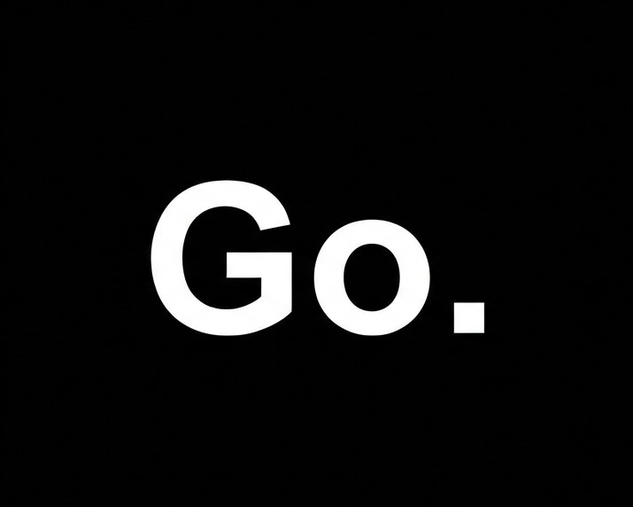

Sites institucionais
Uma casa digital com personalidade, clareza e tudo que sua marca precisa para ser levada a sério.
Sites & landing pages sob medida
Presença digital com clareza, personalidade e intenção. A GoSyte transforma boas ideias em experiências que fazem sentido e vendem.

Para lojas, serviços e negócios que querem se destacar online, criamos páginas rápidas, autorais e pensadas para converter atenção em ação.
Uma experiência digital profissional, onde quer que você esteja.
GoSyte / studio digitalUma casa digital com personalidade, clareza e tudo que sua marca precisa para ser levada a sério.
Campanhas com foco em conversão, mensagem afiada e uma jornada que conduz até o próximo passo.
Do conceito à publicação, cuidamos do visual, conteúdo, estrutura e performance do seu projeto.
Entendemos sua marca, seu público e o que precisa acontecer.
Transformamos contexto em uma ideia visual clara e autoral.
Desenhamos e desenvolvemos uma experiência viva e responsiva.
Colocamos seu site no ar, otimizado para continuar performando.
Atendimento remoto para clientes no Brasil e no exterior.
Falar pelo WhatsApp